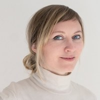

Portfolio - Use cases
Projets
choisis

Alina Lagarde
Senior Service & Product Designer avec 10+ ans à faire le lien entre les équipes métier, les squads produit et les utilisateurs finaux — d'Orange en SAFe Agile à la recherche terrain avec le CSTB et l'ADEME. Je conçois pour la complexité : écosystèmes multi-acteurs, pilotes itératifs, outils B2B que les équipes terrain utilisent vraiment.
- 01 Orange & Sosh Structurer une trajectoire produit progressive. Stratégie produit & Service Design
- 02 CSTB / RESTORE Cartographier un écosystème métier complexe. UX Research
- 03 Septeo-ADB Event Storming prospectif pour une roadmap IA-centric. Service Design
- 04 INSEE Refonte intranet et communication interne. UX Strategy
- 05 Alain Afflelou Construire une pratique product design à partir de zéro. Product Design
Portfolio - Case studies
Selected
projects
Alina Lagarde
Senior Service & Product Designer with 10+ years bridging business teams, product squads, and end users — from Orange's Agile SAFe environment to field research with CSTB and ADEME. I design for complexity: multi-stakeholder ecosystems, iterative pilots, and B2B tools that sales and operations teams actually use.
- 01 Orange & Sosh Structuring an incremental product trajectory. Product Strategy & Service Design
- 02 CSTB / RESTORE Mapping a complex professional ecosystem. UX Research
- 03 Septeo-ADB Prospective Event Storming for an AI-centric roadmap. Service Design
- 04 INSEE Intranet redesign and internal communication. UX Strategy
- 05 Alain Afflelou Building a product design practice from scratch. Product Design